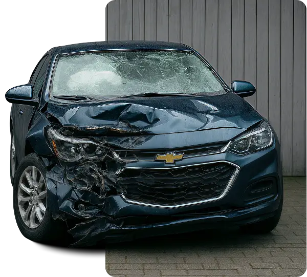
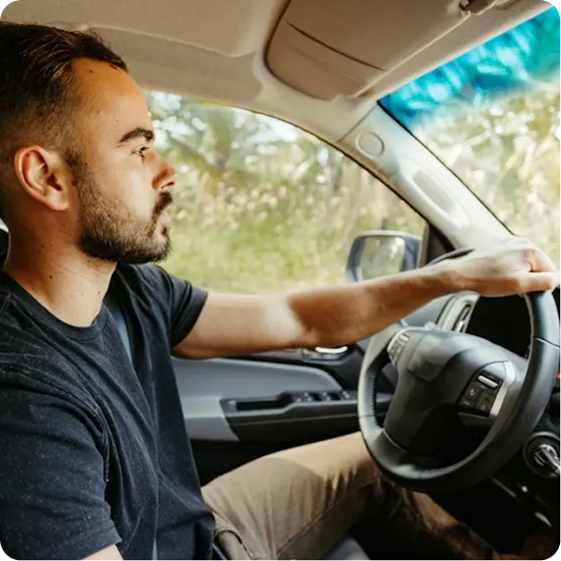
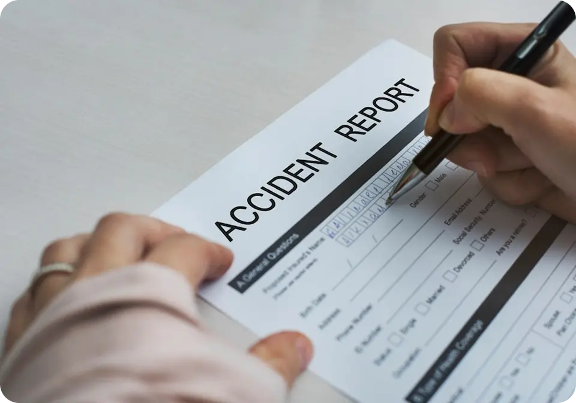

Get Your Official California Police Accident Report. Fast.
Need to get a police accident report or request an accident report online? We help you order your police report, find your crash report, and retrieve your traffic collision report from the correct police department / law enforcement agency. We handle the police report request process and deliver your official California accident report by email.
230+
Reports Found Last Month
5K+
Satisfied Clients
98%
Project Success

Our Promise at Accident Report Help
We help drivers, insurers, and legal teams request and retrieve official police accident reports (crash reports / collision reports) from the correct law enforcement agency. With coverage across California, we handle the police report request process and deliver your accident report by email when available.
01
Nationwide coverage
We work with police/sheriff/highway patrol systems in California.
02
Money-back guarantee
Full refund if the report can’t be retrieved.
03
Secure police report handling
Encrypted payments. Your data is private.
Get Your Official Police Accident Report — Fast.
When we locate your official accident report, we send it straight to your email so you can review it, save it, or share it whenever needed. Everything arrives in a clean, easy-to-use format that works for insurance teams, attorneys, or your own personal records.
You Typically Need a Police Report for
01Insurance claims – adjusters use it to verify facts, damage and fault. Medical reimbursement (PIP/MedPay) – clinics and insurers request it for injury billing. Legal protection – attorneys use it to pursue or defend a claim. DMV & records – correcting names/addresses/VINs or documenting a hit-and-run. Vehicle rental/replacement & towing – some providers ask for it.
Who can request a police report?
02Drivers, passengers or vehicle owners listed in the crash. Parents/guardians of minors. Authorised representatives (e.g., your lawyer or insurer). Access rules vary by state. We’ll tell you if any additional authorisation is required.
When should I get my official police report?
03Right away. Many agencies release reports in 3–10 business days after a crash. If yours isn’t released yet, we monitor and deliver it the moment it’s available.
Why Choose Accident Report Help?
People are often surprised when different companies or agencies ask for their accident report long after the incident. Having it ready makes follow-ups much easier and saves you from delays when someone needs verification. Whether you’re handling paperwork or speaking with professionals, the report helps keep your information consistent and clear.
Fast & Easy Report Request Process
Available Across California
100% Secure and Confidential
No Obligation - Free Access
Backed by Trusted Legal Professionals
Legal Guidance After an Accident
After an accident, especially one involving injuries, many people are unsure how official reports, medical records, or early insurance conversations may affect them. Accident Report Help is a law firm that helps individuals understand these legal and practical implications so they can make informed decisions after an incident.
Not every accident — or every injury — requires legal action. In many cases, people simply want clarity around what their accident report means, how an injury may be documented, and whether any follow-up steps are worth considering.
When Legal Guidance Can Be Helpful
Legal guidance may be useful if:
- You were injured, even if symptoms appeared days later
- Medical treatment or follow-up care was required
- There is uncertainty about how injuries are reflected in the accident report
- Fault or responsibility is unclear or disputed
- You’ve been contacted by an insurer and are unsure how to respond
- The accident involved multiple parties or unusual circumstances
How Accident Report Help Supports You
Our role is to help you:
- Understand how injuries are documented in accident reports
- Clarify how local laws may apply to injury-related situations
- Avoid common mistakes made after an accident involving injuries
- Understand your options before deciding on any next steps
Speaking with our team does not obligate you to take legal action. The goal is clarity first — particularly when injuries are involved — so you can move forward with confidence.
Find My ReportPolice Report Pricing & Timing

Protect Yourself
Accident reports aren’t kept in one central place. A report from a highway crash may be handled by the State Police, while a neighborhood accident may be stored with a local police department. Because of this, many people end up searching in the wrong place or waiting longer than expected. Knowing which agency handled the incident is key to getting the correct report quickly.
We Only Pass the Agency Fee
A small pass-through fee set by police/sheriff/highway patrol. Varies by jurisdiction. (Typically $5 - $25)
We Start Immediately ⚡
Your request is submitted the same day — we begin processing right away.
Delivery Timeline
Agency Release: usually 3–10 business days after the incident
How It Works: Get Your Police Accident Report
We take the guesswork out of finding your accident report by handling everything directly with the correct California agency. Our process is simple, clear, and designed to save you time.
01
We locate the right department
Our team identifies which agency handled your accident so you don’t waste time searching different places. This helps you avoid confusion and ensures the lookup starts correctly.
02
Quick start on every request
We begin reviewing your details as soon as you submit them. Starting early often speeds up the entire timeline for getting your report.
03
Clear updates throughout the process
You receive simple, easy-to-read messages at key stages. This way, you always know what’s happening without needing to follow up.
04
Secure handling of your information
Your details are kept private and processed through safe channels only. We never pass your information to anyone except the agency handling your report.
05
Coverage across all regions
We work with local police departments, county offices, and the State Police. No matter where the accident happened, we can direct the search appropriately.
06
Full refund if your report can’t be found
If we’re unable to locate your accident report after completing our search, you will receive your money back. No extra steps or hassles, just a simple guarantee.
How We Keep You Updated During the Process
We know waiting for an accident report can feel confusing, so we keep you informed at the main stages. Our updates are clear and to the point, giving you a simple view of what’s happening without any complicated follow-ups.
Right After You Submit Your Details
As soon as you complete the form, you’ll receive a confirmation message showing that your request is active. Our team immediately reviews your information and prepares the lookup so things move forward without delay.
Date + Exact Spot

While We’re Searching for Your Report
Once we contact the correct agency, we send you a short update. If the department has a set processing time or requires a small detail from you, we let you know early to keep the request on track.
Included with no fees
When Your Report Is Ready or If More Time Is Needed
You’ll receive a final update once your accident report is located or if the agency needs additional time. These updates help you stay prepared for the next step and know exactly what to expect.
Delivered free of charge
Your Updates Will Include:
Which agency has it
We confirm whether your report is with city police, a county sheriff, or State Police. This helps you know the exact source of your report.
Extra details they may need
If the office needs a road name, block number, or time frame, we notify you right away. This keeps the process moving smoothly.
Typical timing for that office
Agencies have different processing speeds, and we share what’s normal for yours. Gives you a realistic timeline for progress.
When your request is active
We notify you when the department officially begins reviewing your information. This confirms your lookup is underway.
Info to save for claims
Useful notes that may help during insurance or attorney conversations. Good to keep for later stages.
What Clients Say About Our Reporting Services
Accident Report Help came through for me when I needed it most. They handled my request with care and urgency, and the communication was outstanding. Definitely worth it.
Linda C.
I didn't even know where to start after my accident, but this site made it so easy. I filled out the form, and within 24 hours I got a detailed response and had access to my police report. Fast, professional, and stress-free!
Jessica M.
Accident Report Help came through for me when I needed it most. They handled my request with care and urgency, and the communication was outstanding. Definitely worth it.
Linda C.
As a lawyer, I've recommended this service to several clients. It's reliable, secure, and gets results faster than going through public channels. A great resource when time matters.
Daniel V.
Request Your Police Accident Report Online
Get your official police accident report quickly and securely. Submit a few details, and we’ll locate the correct report, keep you updated through each step, and deliver the digital file straight to your inbox as soon as it’s ready.